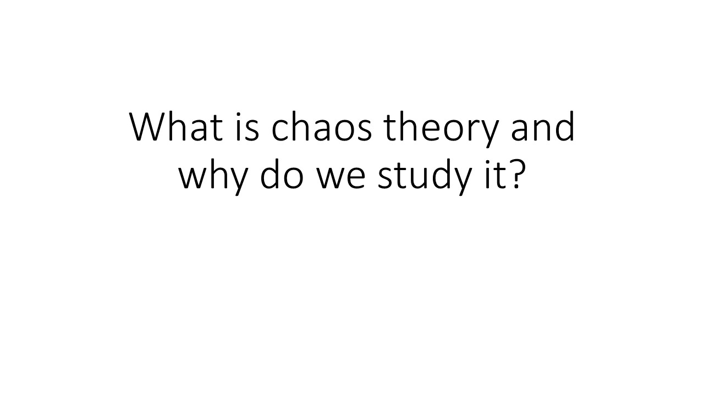

ENG0018 Computer Laboratory 2023/24
Student URN: 6820560
Conference paper: BaBaBoeoey
Abstract
Mitrochondria is the powerhouse of the cell.
What is chaos theory?
This is the stuff before
How is chaos defined?
This is the stuff before
Where can chaos be found?
This is the stuff before
Why do we study chaos theory?
This is the stuff before
Conclusion
This is the stuff before
References
Britannica, The Editors of Encyclopaedia (2023) “Chaos theory” Encyclopaedia Britannica
Available at: "https://www.britannica.com/science/chaos-theory" (Accessed: 26 October 2023)
Bishop, Robert (2008) “Chaos” Stanford Encyclopedia of Philosophy (substantive revision October 13th 2015)
Available at: "https://plato.stanford.edu/entries/chaos/" (Accessed: 26 October 2023)
Eklund, Alexander (2009) An Introduction to Chaos Theory by Means of the Logistic Equation Speakers & Events. 2639
Available at: "https://digitalcommons.spu.edu/av_events/2639/" (Downloaded: 29 October 2023)
Topaloglou, Georgios (2013) An Introduction to Chaos Theory
Available at: "https://www.proquest.com/scholarly-journals/introduction-chaos-theory/docview/1751969471/se-2?accountid=17256" (Accessed: 24 October 2023)
C., Mauro, L.C., Iberê, L.S., Silvio, C.L., Kelly (2017) Deterministic Chaos Theory: Basic Concepts
Available at: "https://www.scielo.br/j/rbef/a/NgKvzrGrXWhhSrYtV8sMQ4n/?lang=en" (Accessed: 25 October 2023)
Ahmad, Ijaz and Shin, Seokjoo (2021) “A novel hybrid image encryption–compression scheme by combining chaos theory and number theory”, Signal Processing: Image Communication, Volume 98. ScienceDirect: Elsevier.
Available at: "https://sciencedirect.com/science/article/pii/S0923596521001983?via%3Dihub"
Weisstein, Eric W. "Logistic Map." MathWorld - A Wolfram Web Resource
Available at: "https://mathworld.wolfram.com/LogisticMap.html" (Accessed: 30 October 2023)
“B.L. Badger” “Logistic Map” blbadger GitHub website
Available at: "https://blbadger.github.io/logistic-map.html" (Accessed: 30 October 2023)
El-Naschie, M.S. (2004) “The Concepts of E Infinity: An elementary introduction to the Cantorian-fractal theory of quantum physics” Chaos, Solitons & Fractals, volume 22, Issue 2, 495-511. ScienceDirect: Elsevier.
Available at: "https://www-sciencedirect-com.surrey.idm.oclc.org/journal/chaos-solitons-and-fractals/vol/22/issue/2"
N., Svetoslav, C., Sebastien (2004) “Occurrence of regular, chaotic and hyperchaotic behavior in a family of modified Rossler hyperchaotic systems” Chaos, Solitons & Fractals, volume 22, Issue 2, 407-431. ScienceDirect: Elsevier.
Available at: "https://www-sciencedirect-com.surrey.idm.oclc.org/journal/chaos-solitons-and-fractals/vol/22/issue/2"
